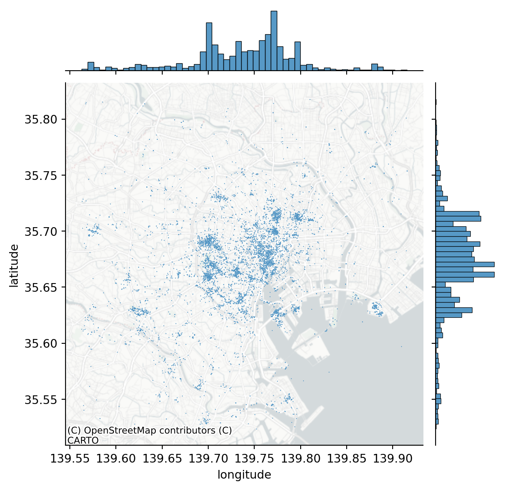
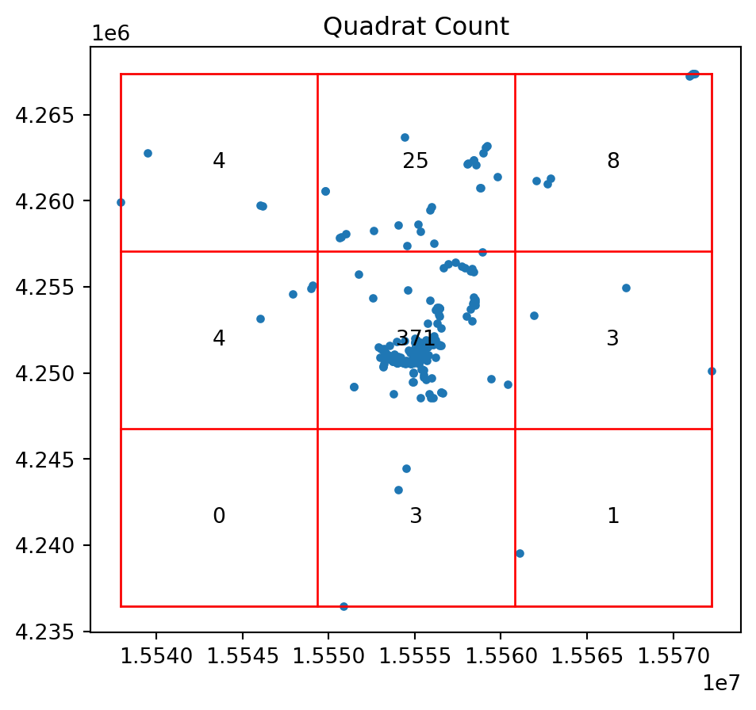

from pointpats import (
distance_statistics,
QStatistic,
random,
PointPattern,
)Distance Based Methods
Introduction
This notebook explores tests for point patterns that are based on various nearest neighbor and point-location, point-point, distances.
Specifically we examine the following statistics:
- Ripley’s \(G\)
- Ripley’s \(F\)
- Ripley’s \(K\)
Data
We will be examining the Tokyo Flickr data set
import pandas as pd
db = pd.read_csv("~/data/385/tokyo_clean.csv")
db.info()<class 'pandas.core.frame.DataFrame'>
RangeIndex: 10000 entries, 0 to 9999
Data columns (total 7 columns):
# Column Non-Null Count Dtype
--- ------ -------------- -----
0 user_id 10000 non-null object
1 longitude 10000 non-null float64
2 latitude 10000 non-null float64
3 date_taken 10000 non-null object
4 photo/video_page_url 10000 non-null object
5 x 10000 non-null float64
6 y 10000 non-null float64
dtypes: float64(4), object(3)
memory usage: 547.0+ KBimport seaborn
import contextily
joint_axes = seaborn.jointplot(
x="longitude", y="latitude", data=db, s=0.5
)
contextily.add_basemap(
joint_axes.ax_joint,
crs="EPSG:4326",
source=contextily.providers.CartoDB.PositronNoLabels,
);
We are going to focus on the most prolific user and subset our pattern to their photos:
user = db.query('user_id == "95795770@N00"')
coordinates = user[["x", "y"]].valuesimport libpysal
from pointpats import centrography
import geopandasalpha_shape, alpha, circs = libpysal.cg.alpha_shape_auto(
coordinates, return_circles=True
)
convex_hull_vertices = centrography.hull(coordinates)import matplotlib.pyplot as plt
f, ax = plt.subplots(1, 1, figsize=(9, 9))
# Plot a green alpha shape
geopandas.GeoSeries(
[alpha_shape]
).plot(
ax=ax,
edgecolor="green",
facecolor="green",
alpha=0.2,
label="Tightest single alpha shape",
)
# Include the points for our prolific user in black
ax.scatter(
*coordinates.T, color="k", marker=".", label="Source Points"
)
# plot the circles forming the boundary of the alpha shape
for i, circle in enumerate(circs):
# only label the first circle of its kind
if i == 0:
label = "Bounding Circles"
else:
label = None
ax.add_patch(
plt.Circle(
circle,
radius=alpha,
facecolor="none",
edgecolor="r",
label=label,
)
)
# add a blue convex hull
ax.add_patch(
plt.Polygon(
convex_hull_vertices,
closed=True,
edgecolor="blue",
facecolor="none",
linestyle=":",
linewidth=2,
label="Convex Hull",
)
)
# Add basemap
contextily.add_basemap(
ax, source=contextily.providers.CartoDB.Positron
)
plt.legend();/tmp/ipykernel_435535/1608907436.py:54: UserWarning: Legend does not support handles for PatchCollection instances.
See: https://matplotlib.org/stable/tutorials/intermediate/legend_guide.html#implementing-a-custom-legend-handler
plt.legend();And we can contrast this against a CSR pattern in the same window:
random_pattern = random.poisson(coordinates, size=len(coordinates))f, ax = plt.subplots(1, figsize=(9, 9))
plt.scatter(
*coordinates.T,
color="k",
marker=".",
label="Observed photographs"
)
plt.scatter(*random_pattern.T, color="r", marker="x", label="Random")
contextily.add_basemap(
ax, source=contextily.providers.CartoDB.Positron
)
ax.legend(ncol=1, loc="center left")
plt.show()random_pattern_ashape = random.poisson(
alpha_shape, size=len(coordinates)
)f, ax = plt.subplots(1, figsize=(9, 9))
plt.scatter(*coordinates.T, color="k", marker=".", label="Observed")
plt.scatter(
*random_pattern_ashape.T, color="r", marker="x", label="Random"
)
contextily.add_basemap(
ax, source=contextily.providers.CartoDB.Positron
)
ax.legend(ncol=1, loc="center left")
plt.show()Quadrat Analysis
We revisit the use of quadrat analysis to test for departures for CSR, setting the stage for the distance based methods:
qstat = QStatistic(coordinates)
qstat.plot()
print(qstat.chi2_pvalue)0.0So the pattern of photo points is a significant departure for CSR.
And for our random pattern in the same window we have:
qstat_null = QStatistic(random_pattern)
qstat_null.plot()print(qstat_null.chi2_pvalue)0.16149772674569046qstat_null_ashape = QStatistic(random_pattern_ashape)
qstat_null_ashape.plot()print(qstat_null_ashape.chi2_pvalue)5.63164842380419e-29Ripley’s \(G\)
We now are ready to consider the distances between each point and its nearest neighbor again. For the Clark-Evans statistic we focused on the mean nearest neighbor distance. This throws away a lot of potential information. After all, the mean is the average of a set of \(n\) nearest neighbor distances. Here we introduce Ripley’s \(G\) statistic which considers the cumulative distribution of the nearest neighbor distances.
f, ax = plt.subplots(1, 2, figsize=(8, 4), sharex=True, sharey=True)
ax[0].scatter(*random_pattern.T, color="red")
ax[1].scatter(
*random_pattern.T,
color="red",
zorder=100,
marker=".",
label="Points"
)
nn_ixs, nn_ds = PointPattern(random_pattern).knn(1)
first = True
for coord, nn_ix, nn_d in zip(random_pattern, nn_ixs, nn_ds):
dx, dy = random_pattern[nn_ix].squeeze() - coord
arrow = ax[1].arrow(
*coord,
dx,
dy,
length_includes_head=True,
overhang=0,
head_length=300 * 3,
head_width=300 * 3,
width=50 * 3,
linewidth=0,
facecolor="k",
head_starts_at_zero=False
)
if first:
plt.plot(
(1e100, 1e101),
(0, 1),
color="k",
marker="<",
markersize=10,
label="Nearest Neighbor to Point",
)
first = False
ax[0].axis([1.554e7, 1.556e7, 4240000, 4260000])
ax[0].set_xticklabels([])
ax[0].set_yticklabels([])
ax[0].set_xticks([])
ax[0].set_yticks([])
f.tight_layout()
ax[1].legend(bbox_to_anchor=(0.5, -0.06), fontsize=16)
plt.show()As our observed \(G(d)\) value is everywhere above the simulation envelopes, we can conclude that the pattern is a departure from CSR in the direction of clustering. The simulation envelopes report the range of the \(G(d)\) values obtained for 99 simulated point patterns under the null at each value of \(d\).
g_test = distance_statistics.g_test(
coordinates, support=40, keep_simulations=True
)import numpy
f, ax = plt.subplots(
1, 2, figsize=(9, 3), gridspec_kw=dict(width_ratios=(6, 3))
)
# plot all the simulations with very fine lines
ax[0].plot(
g_test.support, g_test.simulations.T, color="k", alpha=0.01
)
# and show the average of simulations
ax[0].plot(
g_test.support,
numpy.median(g_test.simulations, axis=0),
color="cyan",
label="median simulation",
)
# and the observed pattern's G function
ax[0].plot(
g_test.support, g_test.statistic, label="observed", color="red"
)
# clean up labels and axes
ax[0].set_xlabel("distance")
ax[0].set_ylabel("% of nearest neighbor\ndistances shorter")
ax[0].legend()
ax[0].set_xlim(0, 2000)
ax[0].set_title(r"Ripley's $G(d)$ function")
# plot the pattern itself on the next frame
ax[1].scatter(*coordinates.T)
# and clean up labels and axes there, too
ax[1].set_xticks([])
ax[1].set_yticks([])
ax[1].set_xticklabels([])
ax[1].set_yticklabels([])
ax[1].set_title("Pattern")
f.tight_layout()
plt.show()Ripley’s \(F\)
While Ripley’s \(G\) takes into account more information from the nearest neighbor distribution, relative to the Clark-Evans statistic, Ripley’s \(F\) statistic goes a bit further. Also referred to as the “empty space” function, the \(F\) function is also a cumulative “nearest distance” distribution. However, here it records the minimum distance from a random set of points in the window to their nearest event point.
The advantage of \(F\) over \(G\) is that \(G\) is limited by the number of event points, while we are free to simulate as many random points as we choose when calculating \(F\):
f_test = distance_statistics.f_test(
coordinates, support=40, keep_simulations=True
)f, ax = plt.subplots(
1, 2, figsize=(9, 3), gridspec_kw=dict(width_ratios=(6, 3))
)
# plot all the simulations with very fine lines
ax[0].plot(
f_test.support, f_test.simulations.T, color="k", alpha=0.01
)
# and show the average of simulations
ax[0].plot(
f_test.support,
numpy.median(f_test.simulations, axis=0),
color="cyan",
label="median simulation",
)
# and the observed pattern's F function
ax[0].plot(
f_test.support, f_test.statistic, label="observed", color="red"
)
# clean up labels and axes
ax[0].set_xlabel("distance")
ax[0].set_ylabel("% of nearest point in pattern\ndistances shorter")
ax[0].legend()
ax[0].set_xlim(0, 2000)
ax[0].set_title(r"Ripley's $F(d)$ function")
# plot the pattern itself on the next frame
ax[1].scatter(*coordinates.T)
# and clean up labels and axes there, too
ax[1].set_xticks([])
ax[1].set_yticks([])
ax[1].set_xticklabels([])
ax[1].set_yticklabels([])
ax[1].set_title("Pattern")
f.tight_layout()
plt.show()Ripley’s \(K\)
While the \(G\) and \(F\) statistics make more use of the nearest-neighbor distance distribution, relative to Clark-Evans, they ignore the other \(n-2\) distances between each point and its set of non-nearest neighbor points. Ripley’s \(K\) function considers the cumulative distance distribution for all point-point pair distances.
k_test = distance_statistics.k_test(
coordinates, support=40, keep_simulations=True
)f, ax = plt.subplots(
1, 2, figsize=(9, 3), gridspec_kw=dict(width_ratios=(6, 3))
)
# plot all the simulations with very fine lines
ax[0].plot(
k_test.support, k_test.simulations.T, color="k", alpha=0.01
)
# and show the average of simulations
ax[0].plot(
k_test.support,
numpy.median(k_test.simulations, axis=0),
color="cyan",
label="median simulation",
)
# and the observed pattern's k function
ax[0].plot(
k_test.support, k_test.statistic, label="observed", color="red"
)
# clean up labels and axes
ax[0].set_xlabel("distance")
ax[0].set_ylabel("Number of pairs in pattern\n separated by distance")
ax[0].legend()
ax[0].set_xlim(0, 2000)
ax[0].set_title(r"Ripley's $K(d)$ function")
# plot the pattern itself on the next frame
ax[1].scatter(*coordinates.T)
# and clean up labels and axes there, too
ax[1].set_xticks([])
ax[1].set_yticks([])
ax[1].set_xticklabels([])
ax[1].set_yticklabels([])
ax[1].set_title("Pattern")
f.tight_layout()
plt.show()Similar to what we found for our other distance statistics, the observed value for Ripley’s \(K\) is a significant departure from CSR, again pointing to clustering.